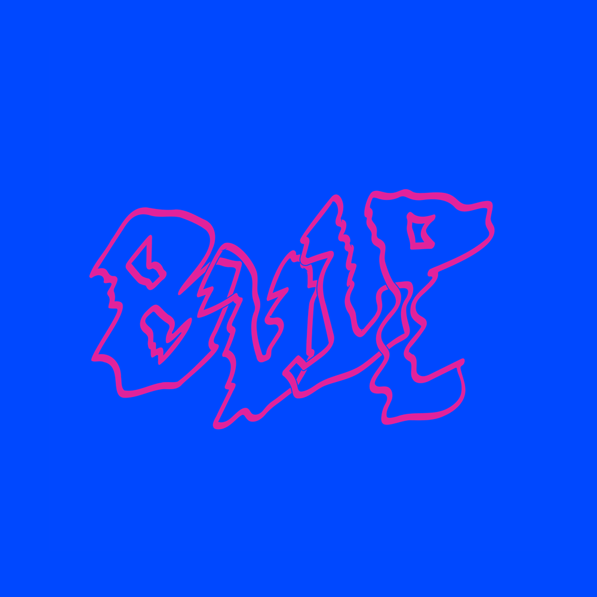

Daarom willen we een voorstel doen
Door te omarmen van wat is
Een poging om te laten zien dat creatief zijn waarde heeft en verbindend werkt
Wij stellen voor een mogelijkheid om lokaal elkaars creativiteit terug zichtbaar te maken
Dat is 
BULP is een moment waarop we iedereen aanzetten vanuit hun huis de straat te verlichten met projecties, schermen of ander licht.
21/11/2020 19:00-22:00